Quick start
RC is a single window that lists your servers on the left and opens whatever you click on the right, in tabs. If you can type an IP address, you can use it.
Install
- Zip (easiest): download
REGTeches_RC_v2.19.1.zipfrom the Releases page, unzip it anywhere (Desktop, Documents, a USB stick) and double-clickRC.exe. Nothing is installed. Your servers are saved next toRC.exe, so the whole folder can be moved or copied. - Scoop:
scoop bucket add regteches https://github.com/ronaldgoodchild/scoop-regtechesthenscoop install rc. Update withscoop update rc; your servers are kept between updates. - From source: install Python 3.11 or newer, run
pip install -r requirements.txt, then double-clickRC.bat(or runpython rc_manager.py).
Your first five minutes
- Add a server. Press Ctrl+N (or File > Add server). Type a name and the server's IP address or DNS name, then click Save. Only the address is required.
- Select it in the list on the left. Its page shows a row of connection buttons: SSH, Files, Remote Desktop, Web and more.
- Click how you want to connect. SSH opens a terminal tab; Files opens a two-pane file manager; Remote Desktop starts Windows' own client already filled in.
- Stop typing passwords. Open Tools > Credentials > Set up keys for all servers, tick your servers and type each password once. RC installs a key so later logins need no password.
- Jump anywhere fast. Press Ctrl+K, type a few letters of a server name and press Enter.

The main window
The window has four parts:
- Menu bar across the top: File, Connect, Servers, Session, View, Tools, Help. The menu reference explains every item.
- Server list on the left, grouped by the Group you give each server, with a status dot beside every server and a search box on top.
- Tab area on the right. The first tab is always the Servers tab (the Overview or the selected server's page). Every terminal, file manager, Stats view and tool opens as another tab.
- Status bar along the bottom, showing the last action and the version.
Status dots
| Dot | Meaning |
|---|---|
| 🟢 Green | The server answered. |
| 🟠 Amber | It answered only on one of its other addresses (for example over Tailscale). |
| 🔴 Red | Not answering. |
| ⚪ Grey | Not checked yet. |
RC checks every server in the background when it starts and then every minute. It tries the SSH port, then the Remote Desktop port (a refused connection still proves the machine is on), then a ping. Changes are written to rc.log. Click ⟳ Check now to re-check immediately.
The Overview
With no server selected the first tab shows how many servers are up or not answering, your ★ Favourites, the servers you used recently (and how long ago) and a ⚠ Not answering list. Double-click any entry to use its default connection; right-click for the full menu. Click 🏠 Overview on a server's page, or a group heading, to come back.
Working with tabs
- Close a tab with the × , middle-click, right-click > Close, or Ctrl+W.
- Right-click a tab: Duplicate this session, Rename, 🔒 Lock (a locked tab survives Close, Disconnect all and Close other tabs until you unlock it), and Close others / to the right / to the left.
- Drag a tab to reorder. The Servers tab stays first.
- Ctrl+1…9 jump to a tab (9 = the last), Ctrl+Tab / Ctrl+Shift+Tab go to the next / previous tab.
- Optionally RC reopens last session's SSH, Files, Stats, Telnet and Serial tabs at start-up (Preferences).
Adding servers
A "server" in RC is any machine or device you connect to: a Linux box, a NAS, a router, a Windows PC. Add it once; RC remembers how to reach it.
The Add / Edit form
Use File > Add server… (Ctrl+N), or File > Edit selected server… to change one. The form opens as a tab, split into pages so it fits a small screen. The buttons Save · Verify · Test login · Set up key login · Cancel stay at the top of every page.
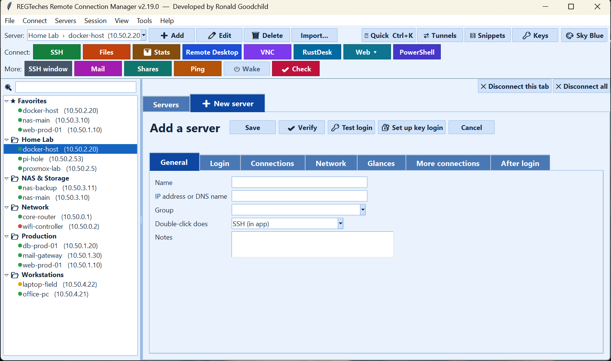
| Page | What you set there |
|---|---|
| General | Name (what you see in the list), IP address or DNS name, Group (servers with the same group are listed together), what a double-click does, and free-text notes. |
| Login | Username and password (saved encrypted, or leave empty to be asked each time), a Saved login (identity) to share one login across servers, and an optional SSH key file. |
| Connections | Ports (SSH, Remote Desktop, VNC), the RustDesk ID and password, file-transfer mode (SFTP, FTP or FTPS) and port, and the web and mail addresses. |
| Network | Other addresses (LAN, Tailscale, ZeroTier… tried in order), Connect through (a jump server), Connect via proxy (SOCKS5 or HTTP), and the MAC address for Wake-on-LAN. |
| Glances | Use Glances for this server's Stats: port, login, https, and a Detect / test button. |
| More connections | Extras: a second web page, FTP and SFTP together, SSH on another port, a share path, Telnet or Serial (COM port), each optionally with its own login. |
| After login | A short script of wait-for-text => what to type steps run after every connect. |
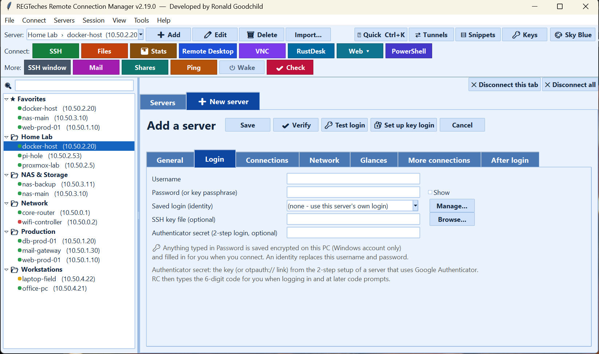
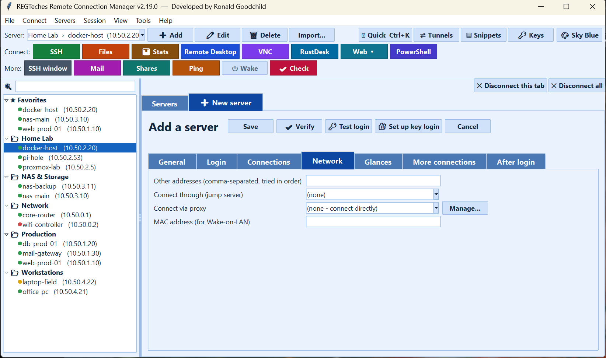
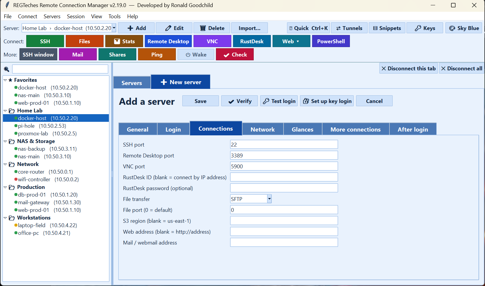
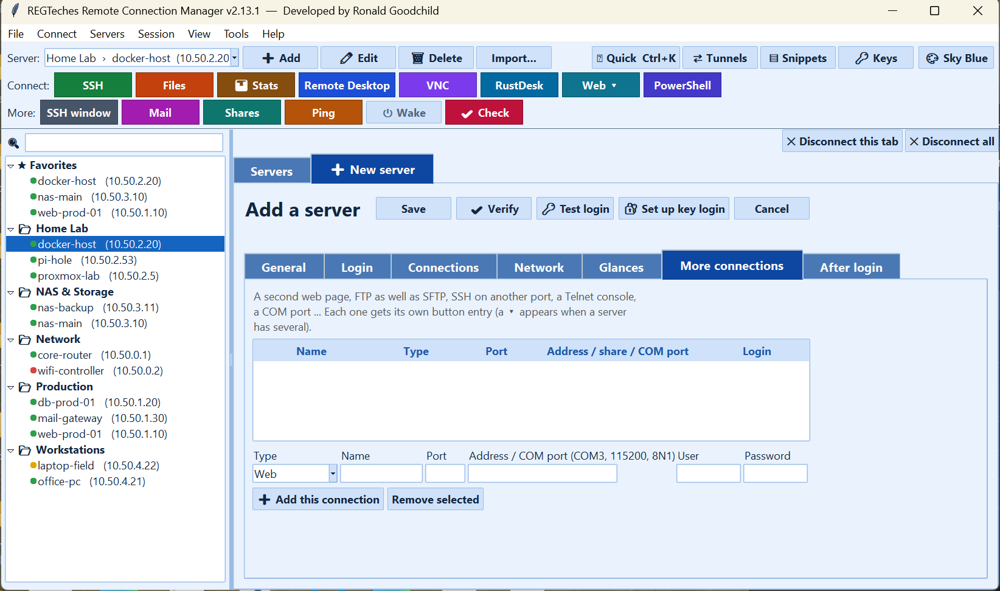
Verify, Test login and Set up key login
- ✔ Verify checks what you typed before you save: a valid IP or DNS name (it catches
192.168.1.300orhost:22), ports in range, that an SSH key file exists and is a private key (not the.pub), sensible web and mail addresses, and duplicates. Mistakes block Save. Then it tests the server itself: the name resolves, SSH / FTP ports really answer as SSH / FTP, Remote Desktop and the web page respond. Only a connection test is made; no login is tried. - 🔑 Test login really logs in with what you typed and tells you whether it worked, before you rely on it.
- 🔐 Set up key login makes an SSH key (or uses the one you chose), installs it on the server, proves it works with the key alone and offers to forget the saved password. Works for Linux, Unix, NAS devices and Windows OpenSSH (including administrator accounts).
Bringing in servers you already have
File > Import servers offers four sources. Each opens the same selection list; servers already in RC are marked and not selected, so nothing is added twice.
| Source | How |
|---|---|
| CSV / text file | One server per line: name,address,group,user (or just an address). Bad addresses and duplicates are skipped and listed. |
| PuTTY / WinSCP / ssh config | RC reads the saved sessions those programs keep. Their stored passwords cannot be read (they are encrypted for those programs), so enter a password once or use a key. |
| MobaXterm | In MobaXterm choose Sessions > Export to get a .mxtsessions file, then From MobaXterm…. SSH, SFTP, Telnet, RDP, VNC, FTP and Serial sessions come across; folders become groups. |
| Xshell | From Xshell (Sessions folder)… and pick the folder holding your .xsh files (usually Documents/NetSarang Computer/<version>/Xshell/Sessions). SSH, SFTP, Telnet and FTP sessions come across. |
You can also find machines automatically with the Network scan and add them with a click, and File > Export servers to a CSV file… saves names, addresses, groups and users (never passwords).
Organising the list
- Groups: type the same Group on several servers (for example Production, Home Lab, NAS & Storage) and they are listed together.
- ★ Favourites: right-click > Add to favourites (or File > Add / remove favourite). Favourites appear in their own group at the top and on the Overview.
- Duplicate a server (File > Duplicate selected server) to start from a similar one. Delete removes it from RC only; the server itself is never touched.
- Copy address puts the address on the clipboard.
Connecting
Select a server, then click a button along the top of its page, use the Connect menu, or double-click the server to run its default action (you choose it per server). The Servers menu lists group > server > connection if you prefer menus.

| Button | What happens |
|---|---|
| SSH (in app) | A real terminal tab. See The SSH terminal. |
| Files | Two-pane file manager (this PC left, the server right) for SFTP, FTP or FTPS. See File manager. |
| 📊 Stats | Live CPU, memory, network, disks, processes and ports. See Live stats. |
| Remote Desktop | Opens Windows' own mstsc with the address, port and username filled in. |
| VNC | Opens your installed VNC viewer (TightVNC, RealVNC, UltraVNC or TigerVNC) at the server's VNC port. RC never puts the VNC password on a command line. |
| RustDesk | Starts rustdesk.exe --connect <ID>. Leave the ID blank to connect by IP (needs Enable direct IP access in RustDesk on the remote PC). |
| Web | Opens the server's web address in your default browser. |
| PowerShell (remote) | A new PowerShell window running Enter-PSSession to the server (WinRM, for Windows servers). |
| SSH (separate window) | Windows' own ssh in a console, if you prefer it to the in-app terminal. |
| Opens the server's webmail address. | |
| Network share | Opens \\address (or \\address\share) in File Explorer. |
| Ping | Four pings; the result appears in a popup. |
| ⏻ Wake | Sends a Wake-on-LAN packet (needs the server's MAC address). |
| ✔ Check this server | Looks the name up in DNS and tests each service, reporting times and any problem. |
| Telnet / Serial | Appear only for servers that have such a connection added under More connections. |
Quick connect (Ctrl+K)
Press Ctrl+K, type a few letters (plex ssh, nas web, tunnel) and press Enter. It searches every server and every connection (including extras), your tunnels and snippets, and a few commands. ↑/↓ choose, Esc closes.
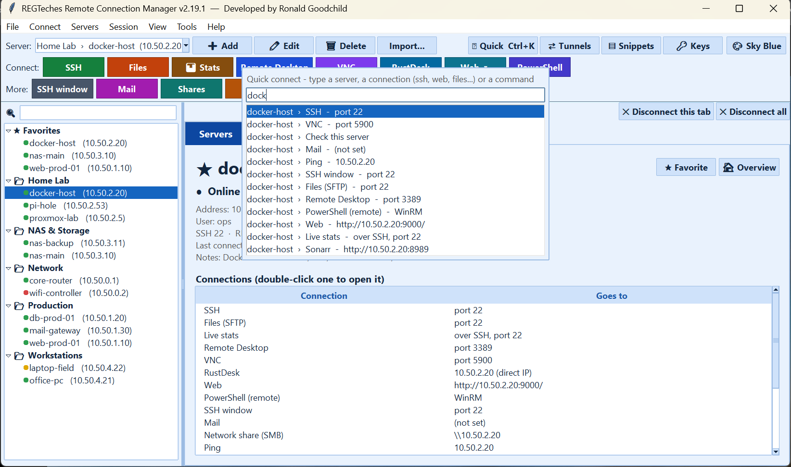
Several connections per server
Every server gets all the standard connection types with no setup. A server can also have extras under More connections: a second or third web page (Sonarr, Radarr, a NAS admin page…), FTP and SFTP, SSH on another port, a share path, a different username. The server's page lists everything it has (extras in blue; double-click to open).
VNC and RustDesk
RC does not bundle either viewer; it uses the one already installed. For VNC set the VNC port (default 5900; display :1 is 5901). For RustDesk put the PC's RustDesk ID in the Connections page. If a viewer lives in an unusual place, add "vnc_viewer": "C:\\path\\viewer.exe" or "rustdesk_path": "C:\\path\\rustdesk.exe" to settings.json.
Other addresses, jump servers and Wake-on-LAN
- Other addresses: a server can have several (LAN, Tailscale, ZeroTier). SSH and file transfers use the first one that answers; the dot turns amber when only an alternate works. Put your usual address in IP address or DNS name, the rest in Other addresses, comma-separated.
- Connect through (jump server): reach a machine only visible from another server (a bastion, a Raspberry Pi at a remote site). Pick the jump server; RC logs in there and tunnels the connection through it for SSH, files, tunnels, snippets and key setup. A jump server may use another jump server (up to three deep).
- Wake-on-LAN: enter the machine's MAC (
AA:BB:CC:DD:EE:FF), then press ⏻ Wake. RC sends the standard magic packet and re-checks the status after 20, 45 and 90 seconds. Wake-on-LAN must be enabled in the machine's BIOS and network card, and you must be on the same network.
The SSH terminal
The in-app terminal is a real terminal emulator, so programs that take over the screen work: vim, nano, htop, top, less, mc, tmux. When you quit them your shell screen returns exactly as you left it.
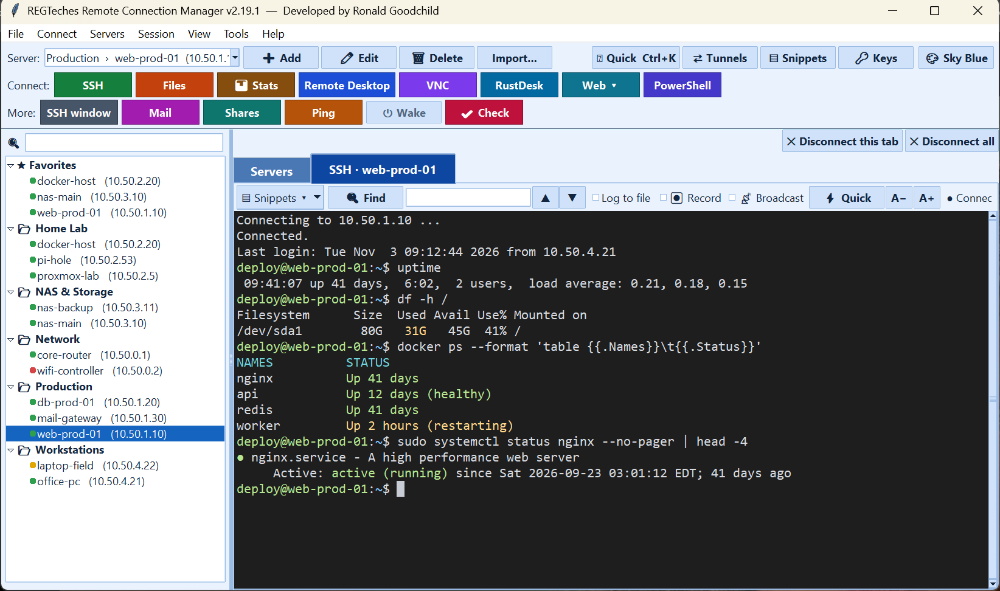
- Text size: Ctrl + mouse wheel, or A− / A+. Remembered.
- Scrollback: 10,000 lines by default (right-click > Scrollback for 2,000 / 10,000 / 50,000). Find searches it too.
- Reconnect: if the connection drops (Wi-Fi blip, reboot, VPN) the tab says so and retries on its own after 2, 4, 8, 15, 30, 30, 60 and 60 seconds, keeping your scrollback and giving you a fresh shell. ⟳ Reconnect tries at once. If you typed
exitor the login was refused it does not retry, so a wrong password cannot lock an account. - Copy and paste: right-click, Ctrl+Shift+C / Ctrl+V, or Shift+Insert. Pasting several lines first asks "Paste N lines?" because Enter inside the text would run each line.
- Keys: function keys, Alt+key, Shift+Tab, Home / End / Page keys and application-cursor mode all work.
- Log to file saves the session (without colour codes) in the
logsfolder.
Colours, font and clipboard
Right-click a terminal (or use the View menu) for Colours (Dark, Light, Solarized Dark, Dracula, Monokai, Nord, Gruvbox Dark, Green on black), Font… (fixed-width fonts, with a sample), Copy when I select text, Right-click pastes (no menu), Middle-click pastes and Save output to a file…. Settings live in terminal.json.
Line numbers, timestamps and suggestions
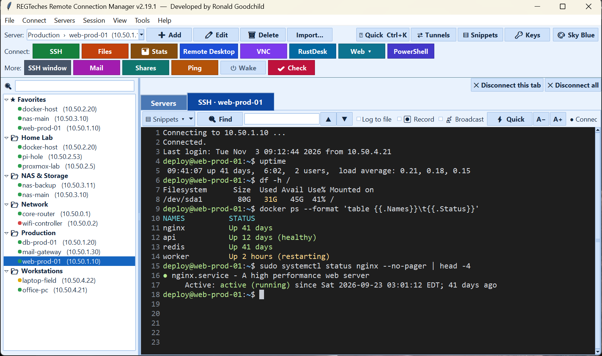
- Line numbers: right-click a terminal > Show line numbers. They count the lines RC keeps (scrollback and screen), to help you find your place.
- Suggestions: Ctrl+Space lists remembered commands that match what you typed. Enter or Tab fills the line without running it.
- Colour schemes: View > Terminal colours > Import a colour scheme… reads iTerm2, Windows Terminal or simple JSON schemes.
- Timestamps: right-click > Timestamp every line in the log file.
- Move a tab into a split view: right-click an SSH tab, or drag it down into the window. The session is reopened in the pane.
⚡ Quick commands and History
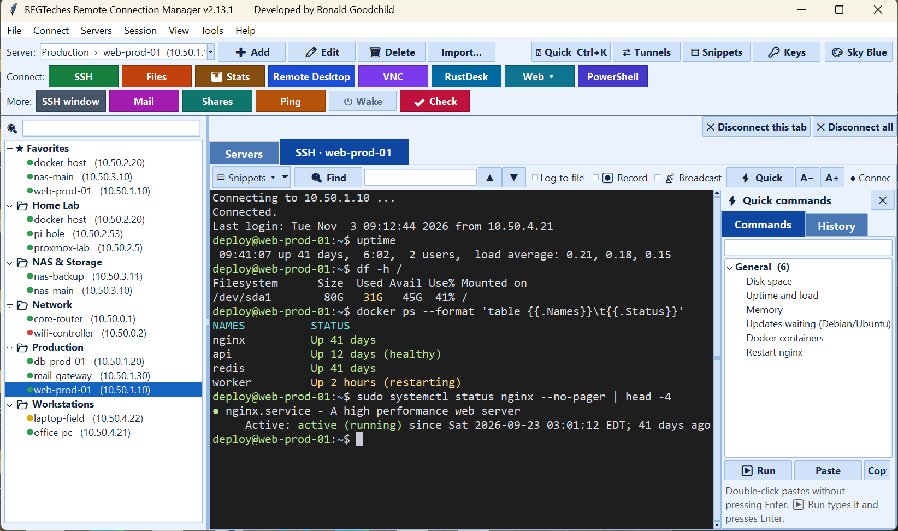
- Commands are your snippets, optionally in Groups. Double-click or Paste types the command without Enter so you can check it; ▶ Run types it and presses Enter (asking first if the snippet says so); Copy copies it.
- History lists commands you typed, newest first with a count and a search box. Run, Paste, Copy, Save as command…, Delete, Clear all. It is stored on this PC only (
history.json) and can be switched off. - Never recorded: anything typed at a password / passphrase / code / PIN prompt, anything typed inside full-screen programs, lines you edited with arrow keys or Tab, and lines starting with a space (start a command with a space to keep it out).
After-login scripts
On a server's After login page, write one step per line as wait-for-text => what to type. After every connect RC watches the output and, when the text appears (case does not matter), types the reply and presses Enter. Example for a box where you always want root:
$ => sudo -i
assword => ${password}
# => cd /var/log${user}, ${host} and ${password} are filled in (the password is never written to the log), // starts a comment, and an empty wait types after a short pause. If a step does not appear within 10 seconds the script stops and says so. It runs again after an automatic reconnect.
Zmodem: sz and rz in the terminal
Servers with lrzsz installed (apt install lrzsz) can move files through the terminal itself.
- Download: run
sz somefileon the server. RC asks once for a folder to save into (change it later from the right-click menu) and never overwrites: an existing name gets(copy). - Upload: run
rzon the server, or right-click the terminal > Upload files with Zmodem. - Progress shows in the status bar, with a ✕ Cancel Zmodem button while it runs. Works in SSH terminals only.
Telnet and Serial (COM port)
For switches, routers, UPSes and other gear without SSH. Add a connection of type Telnet or Serial (COM port) under More connections and a button appears for that server. They open the same terminal tab, so Find, logging, colours, Broadcast and after-login scripts all work.
- Telnet defaults to port 23 and sends everything, passwords included, unencrypted: use it only on trusted networks. For the login use After login:
login: => ${user}thenassword: => ${password}. - Serial: put the settings in the address box:
COM3orCOM3, 115200, 8N1, rtscts(speed, data bits / parity / stop bits, thenrtsctsorxonxoff). Tools > Network > Serial ports on this PC lists what is plugged in. A device reached only by cable still needs an address: typelocalhost.
Recording and playback
Tick ⏺ Record on any terminal tab to save what the server sends, with its timing, as a .cast file in the recordings folder (standard asciicast v2, so it also plays in asciinema tools). Untick it or close the tab to finish. Tools > Play a terminal recording… opens a player with Play / Pause, Restart, speed (0.5x to 8x), Skip long pauses and a slider to jump anywhere.
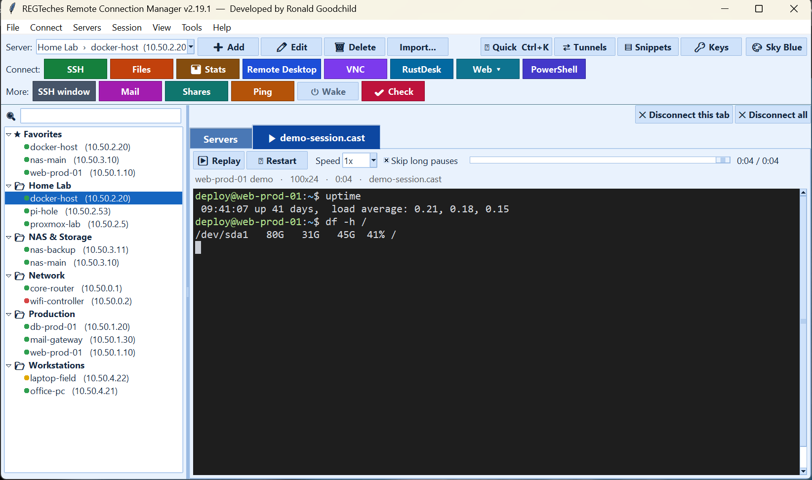
Split view, broadcast and workspaces
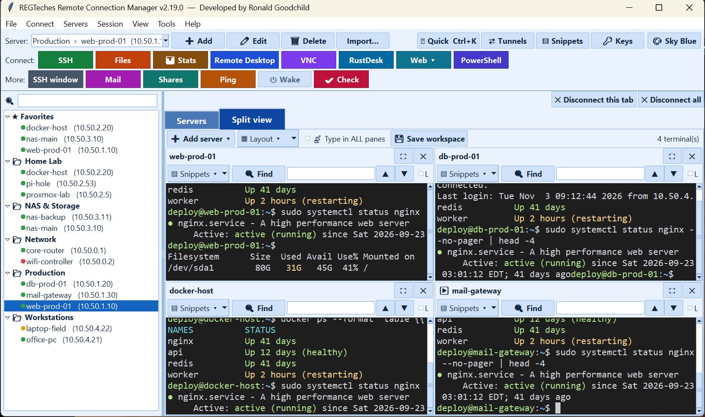
- Split view: Session > New split view opens one tab that tiles up to 9 terminals (Grid, Side by side or Stacked from the Layout button). ➕ Add server puts a server in a pane; Session > Open selected server in a split view does the same from the list. Double-click a pane's title (or ⛶) to zoom it; ✕ closes it. Every pane is a normal terminal with its own reconnect, Find and scrollback.
- Broadcast: tick 📡 Type in ALL panes (or Session > Broadcast) and what you type or paste in one pane goes to all of them, including ordinary tabs you ticked. RC asks once before first use. Enter is sent too, so be careful.
- Workspaces: 💾 Save workspace stores the servers and layout under a name. Session > Open workspace reopens it in one click. Manage workspaces… renames or deletes them (
workspaces.json).
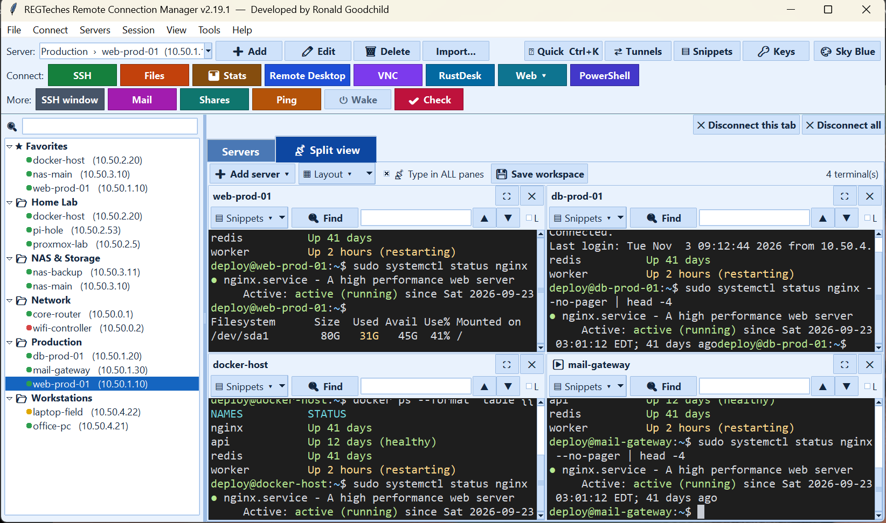
File manager
Modelled on WinSCP's Commander layout: this PC on the left, the server on the right.
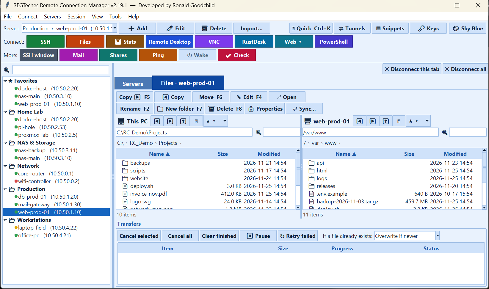
- Copy files: drag and drop between panes (drop on a folder row to go inside), or use the buttons / keys: F5 copy, F6 move, F7 new folder, F8 delete, F2 rename, F4 edit.
- Transfer queue: progress bars, cancel one or all, ⏸ Pause / ▶ Resume and ↻ Retry failed, on its own connection so you can keep browsing. If a file already exists choose overwrite if newer (default), overwrite, skip or ask. Copies keep timestamps, so unchanged files are skipped the second time.
- Synchronize…: compares a folder on this PC with one on the server and updates either side (or both, newer wins). Preview changes shows a checklist first; untick anything you do not want, then Apply. Deleting target-only files is off by default and asks first.
- Edit (F4) opens the built-in editor; Ctrl+S saves straight back to the server. Open hands the file to the Windows program for its type and uploads it again every time you save.
- Right-click menu: Edit / Open, Copy or Move across, Copy, Cut, Paste here (on the server a copy runs
cp -aon the server itself, so nothing travels through your PC), Rename, New folder, New file, Delete, Properties (change permissions, octal like 755), Copy path, Type path into the SSH terminal, Select all, show hidden files, Refresh. - Navigation: a clickable path trail, click a column heading to sort, a filter box per pane, back / forward / up, ★ bookmarks per server, and RC reopens the last folder you were in.
- FTPS accepts self-signed certificates (usual on home servers) and supports port 990. Plain FTP sends the password unencrypted: prefer SFTP or FTPS.
WebDAV and S3 storage
On the server's Connections page set File transfer to WebDAV, WebDAVS, S3 or S3 (http), then use the usual Files button. WebDAV covers Nextcloud, ownCloud and NAS boxes. S3 covers Amazon S3, MinIO, Wasabi, Backblaze B2 and compatible storage (set the S3 region if it is not us-east-1). https certificates are not checked, so self-signed servers work. The file panes also support type-ahead, symbolic links and choosable columns.
Live stats
Click 📊 Stats to watch a server. RC logs in over SSH with the saved login or key and refreshes every 2, 5 (default), 10, 30 or 60 seconds. Nothing is installed or changed on the server: one read-only script reads /proc, df, ps and ss.

- Tiles: CPU % with a graph (cores and load average), memory and swap, network download / upload, and system and uptime.
- Processes: click a column heading to sort, type in the filter box; busy ones are tinted amber (40%+ CPU) or red (80%+). Disks tint at 80% and 90% full. Listening ports shows what the server is serving (program names appear with a root login).
- Process details and signals: double-click a process (or Details / send signal…) to see its command line, working folder, memory, open files and disk I/O. Choose TERM (stop politely), HUP (reload), INT or KILL and click Send…. RC always asks first, with an extra warning for KILL. Other users' processes need root or passwordless sudo.
- Services (systemd): every service with its state and whether it starts at boot, with a Running / Failed / Enabled switch. Select one and Start, Stop, Restart, Enable at boot, Disable at boot (confirmation first, with extra care for ssh / network services) or Logs… for the last 200 journal lines.
- System: OS, kernel, CPU model, time zone, clock difference from this PC (flagged over a minute: a sign of broken NTP), every network interface with MAC, speed and addresses, and disks.
- Pause, ⟳ Now and the interval are at the top. If the link drops the tab reconnects by itself; if a server keeps refusing logins RC waits longer between tries (up to a minute) and says when it will try again.
- Works on Linux, Raspberry Pi, Synology / QNAP and other servers that have
/proc. A Windows SSH server answers "not supported": use Glances (below), Remote Desktop or PowerShell there.
Docker

Lists a server's containers with state, CPU, memory, image and ports. Select one to start, stop, restart or remove it (RC asks before stop, restart and remove), or double-click for its logs. Uses docker over SSH, with sudo -n if needed.
Hardware and IPMI
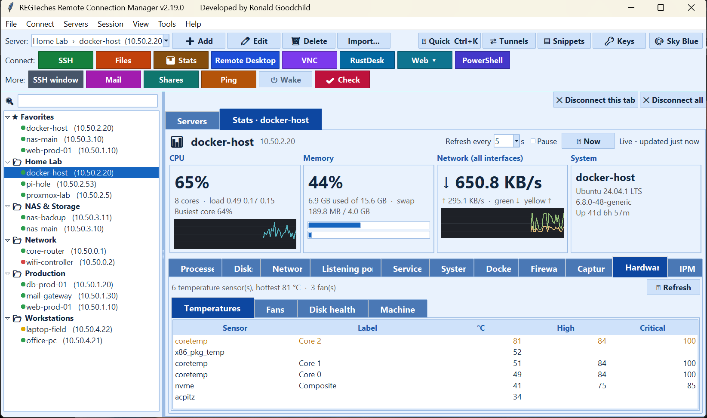
Hardware shows temperatures, fans and machine details, and on request SMART disk health (smartmontools, needs root or passwordless sudo). Read-only.
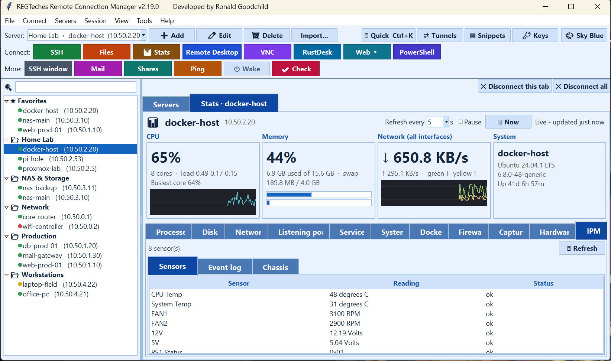
IPMI shows sensors, the event log and chassis status through ipmitool. Most PCs have no IPMI and the page says so.
Firewall
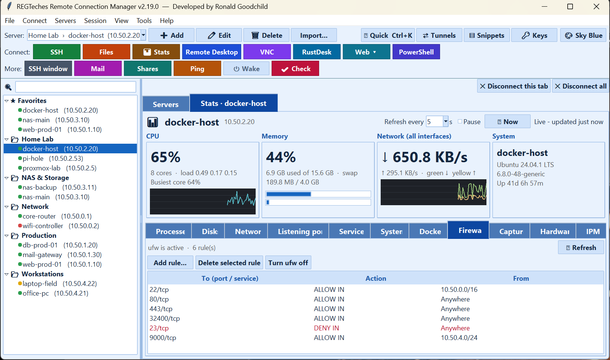
Lists the server's firewall rules. With ufw you can add or delete rules and turn it on or off; with firewalld add or remove ports and services; nftables and iptables are read-only. Every change asks first, and RC warns if it could cut your own SSH connection.
Packet capture
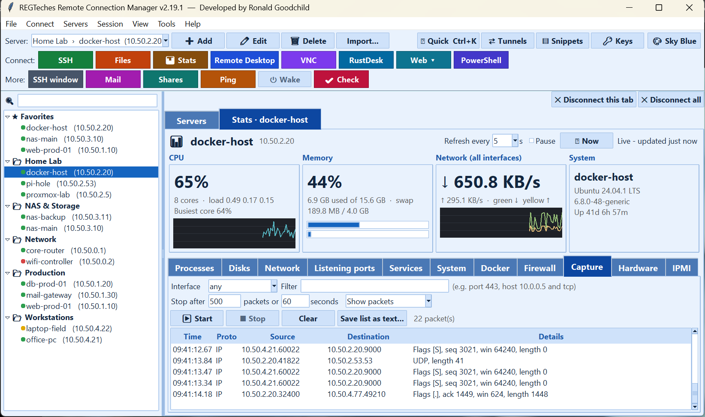
Runs tcpdump on the server. Choose an interface, an optional filter and a limit, then Show packets or Record to a .pcap file for Wireshark. Needs tcpdump and root or passwordless sudo.
These pages are not shown for servers read through Glances.
Stats from Glances (PCs and servers with no SSH)
If a machine already runs Glances in web mode (glances -w, port 61208), open that server's Glances page and click 🔎 Detect / test Glances. RC finds it and ticks Use Glances for this server's Stats itself. The Stats tab then reads Glances' REST API, so it works for Windows PCs and devices you have no SSH login for. You also get a Containers tab (Docker / Podman) and temperature sensors. Not available in this mode: sending signals, the Services list and the Listening ports list. Set the port, a username and password (if Glances was started with --password) and https (if started with --enable-https; self-signed certificates are accepted).
Network tools
Network scan
Tools > Network > Network scan finds the machines on a network and what they offer.

- Type a network (
192.168.1.0/24, filled in with your own /24) or a range (192.168.1.10-50). - Choose ports:
common(25 usual ones), a list like22,80,443, or a range like1-1024. - Click ▶ Scan. Every address is tried with plain TCP connections (a "refused" answer also proves a machine is there). Machines appear as they are found, then names (reverse DNS) and MAC addresses (from your PC's ARP table) are filled in.
- Double-click a machine, or ➕ Add as server…, to open the Add form prefilled with its name, address, MAC and a sensible double-click action. Machines already in RC are marked ✔.
- Deep scan: select a machine and click Scan more ports on this machine…. Type a range such as
1-1024, orallto try every port from 1 to 65535 (about two minutes; it shows progress, and ■ Stop ends it early but keeps what it found).allworks on one machine only, never on a whole network. - Copy and Export CSV… save the list; click a heading to sort. At most 1,024 addresses per scan.
SSH tunnels
Tools > Network > SSH tunnels (or the Tunnels button). Three kinds: Local (a port on this PC reaches a service behind the server), Remote (a port on the server reaches something on this PC) and Dynamic (a SOCKS5 proxy). Start and stop with one click; Open in browser for local ones.
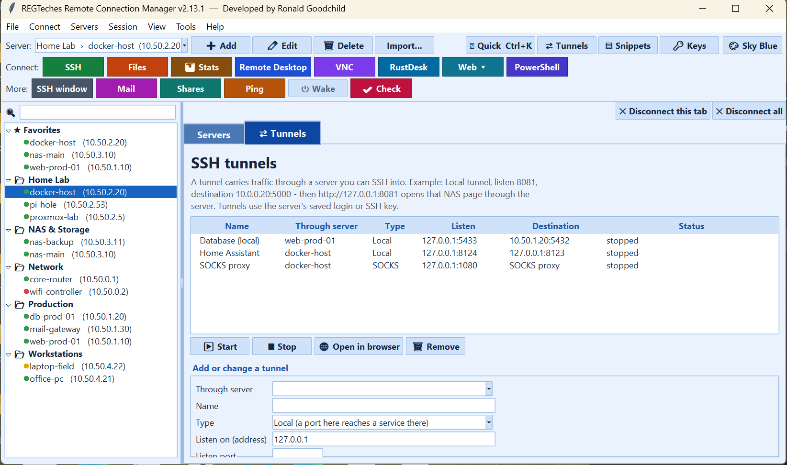
Example: Local, listen 8081, destination 10.0.0.20:5000 through your Linux box, then open http://127.0.0.1:8081. Tunnels use the server's saved login or key and stop when you close RC. They listen on 127.0.0.1 (this PC only) unless you type 0.0.0.0, and RC asks before allowing that.
Proxies
Tools > Network > Proxies. Add a SOCKS5 or HTTP (CONNECT) proxy with an optional username and password, then pick it on a server's Network page under Connect via proxy. SSH terminals, SFTP, tunnels, Stats, snippets, key setup and the status dot all go through it. FTP / FTPS, Remote Desktop, VNC, web and ping do not use proxies. With SOCKS5 the proxy resolves the server's name itself. ✔ Test… connects to a host:port through the proxy and shows what came back or exactly why not.
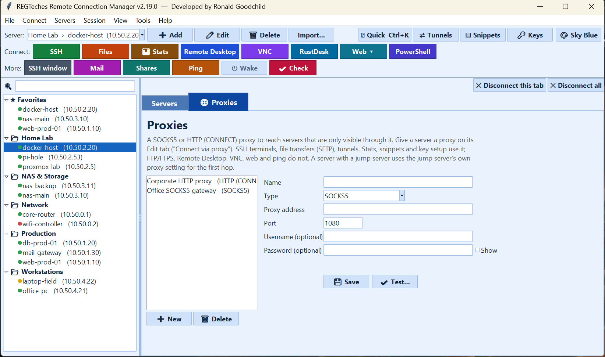
Local servers (TFTP / HTTP)
Tools > Network > Local servers starts a temporary server on this PC for devices that fetch files, such as a switch loading a config or firmware by TFTP. Pick a folder and a port, click Start, and the tab shows the addresses other devices should use and logs every request.
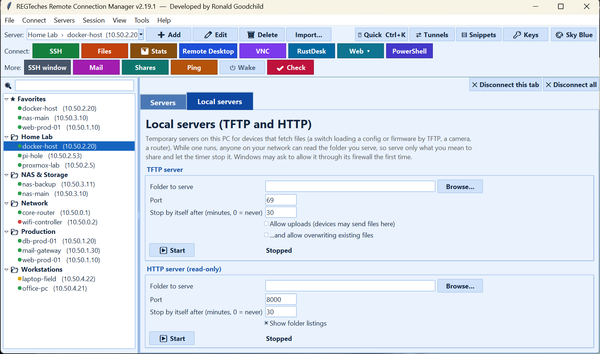
- TFTP (port 69) is read-only unless Allow uploads is ticked (new files only unless allow overwriting is ticked too).
- HTTP is read-only, with optional folder listings; uploads and deletes are refused.
- Both refuse anything outside the chosen folder, stop by themselves after N minutes (default 30) and stop when RC closes. While one runs, anyone on your network can read that folder: serve only what you mean to share. Windows may ask to allow the program through its firewall.
Serial ports on this PC
Tools > Network > Serial ports on this PC… lists the COM ports that are plugged in, to help you fill in a Serial connection.
Logins and credentials
Saved logins
Fill in Username and Password on a server's Login page and click Save: from then on every connection uses them with no prompt. Extra connections can have their own. Prefer not to save anything? Leave Password empty and RC asks when you connect (with a Remember box).
- Where it is kept: in
hosts.json, encrypted with Windows' own protection (DPAPI) tied to your Windows account on this PC. The file is useless on another PC or user, and a password never appears in it as text. (That is why Backup exists.) - On screen: dots, with a Show box while you type. A saved password is never shown again: leave the box empty to keep it, type to replace it, or tick forget.
- Keys are better where they work (an SSH key file or ssh-agent): then nothing needs saving. For a key with a passphrase put the passphrase in the Password box.
- Anyone who can sign in to your Windows account can use your saved logins, as with any saved-password feature. Lock your PC.
Two-step logins (authenticator codes)
For servers that ask for a Google Authenticator style code: on the Login page paste the secret (or the otpauth:// link) into Authenticator secret. It is saved encrypted, and RC answers the password and verification code prompts. Login scripts can use ${totp}. Guard the secret like a password.
Identities
Tools > Credentials > Identities. An identity is a reusable login: a name, a username and either a password, a key file, or "SSH agent / default keys". Pick it on a server's Login page under Saved login (identity). That server then uses the identity instead of its own username and password, so changing a password once changes it for every server that uses it. Deleting an identity sends its servers back to their own settings.
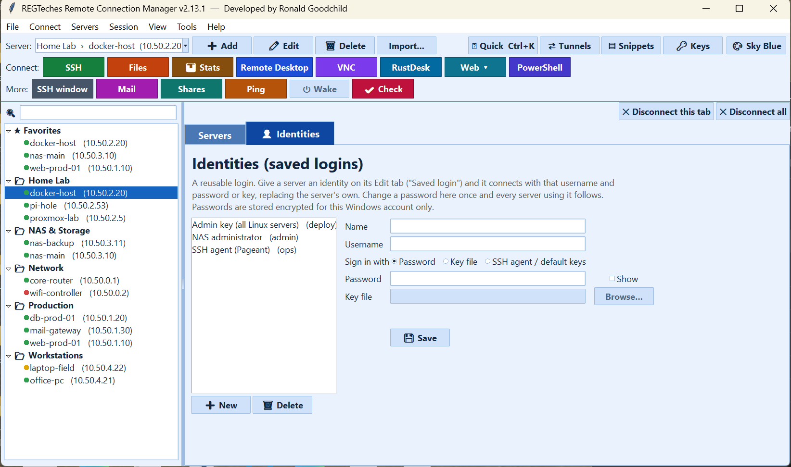
One-click keys for the whole lab
Tools > Credentials > Set up keys for all servers (or the 🔑 Keys button) creates one ed25519 key for this PC, with no passphrase and no expiry, and installs it on every server you tick. Type each password once; RC installs the public key (Linux, Synology, routers with Dropbear, Windows OpenSSH), tests a key-only login and remembers the key for that server. Servers that already accept the key are skipped. Using a second PC? Run Keys there too: each PC gets its own key and no private key is ever copied between machines.
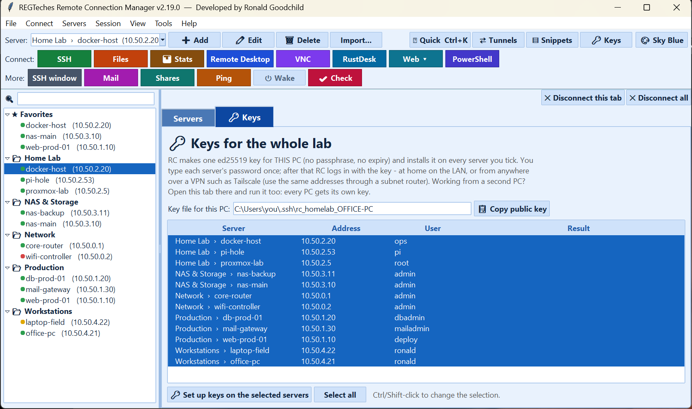
Trusted host keys
The first time you reach an SSH / SFTP server you are shown its key fingerprint and asked to trust it. If the key later changes, RC refuses to connect and warns you. Tools > Credentials > Trusted host keys lists every trusted key; if a server was rebuilt, select it and click Forget, and the next connection asks you to trust the new key.
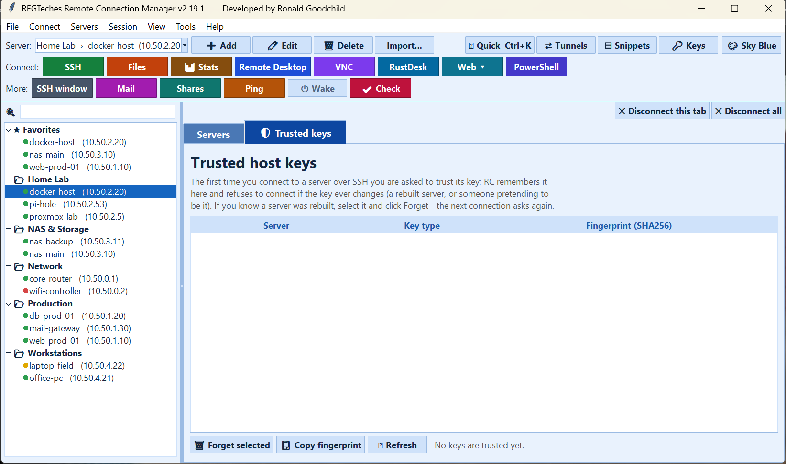
Tools > Credentials > Forget ALL saved passwords… wipes every saved password after asking.
Snippets, notes and history
Snippets (saved commands)
Tools > Snippets. Save a command once and run it on any servers you pick (or a whole group): RC connects to each with its saved login or key and shows the result per server. Snippets can have a Group, and a snippet can be marked "confirm first". In a terminal the Snippets menu types one into the session.
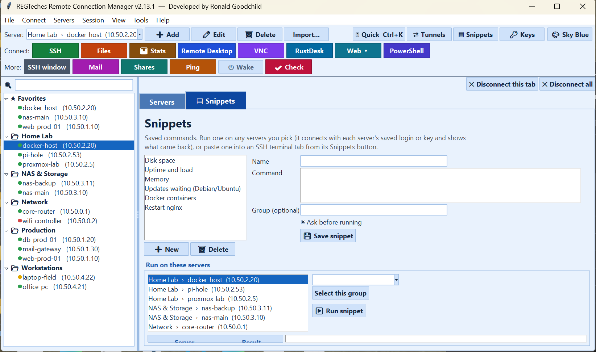
Notes
Tools > Notes, or right-click a server > Notes…. Free-form notes with tags, optionally attached to a server: rack positions, which switch port goes where, "how I fixed it last time". Search matches title, text and tags; filter by tag or server. Write in Markdown (# heading, - bullet, **bold**, backticks for code) and tick Preview to see it formatted. Notes save as you type and are included in Backup.
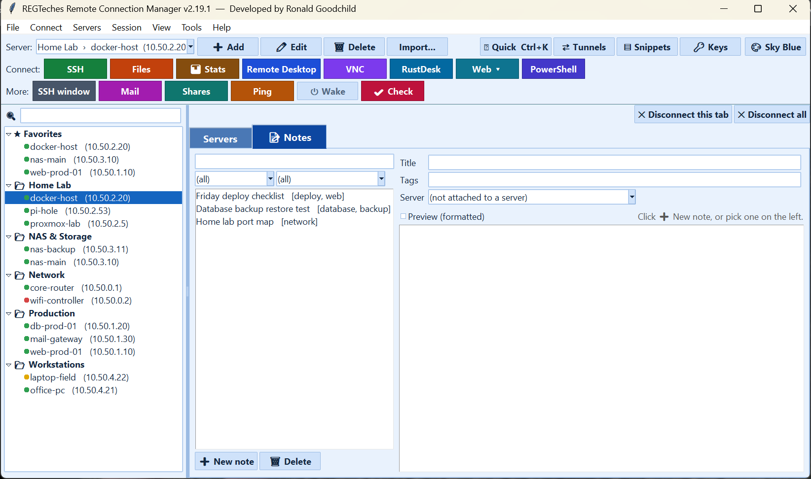
Backup, restore and moving to a new PC
Saved passwords are locked to one Windows account on one PC, so simply copying hosts.json to another PC loses them. Backup solves that.
- On the old PC: File > Backup > Back up everything (encrypted)…. Choose a password (at least 8 characters; it cannot be recovered), type it again, and choose where to save the
.rcbackupfile. - Move the file to the new PC by USB stick, network share or cloud.
- On the new PC: File > Backup > Restore from a backup…, pick the file and enter the password. Choose whether to add what is missing and overwrite matching servers or only add what is missing.
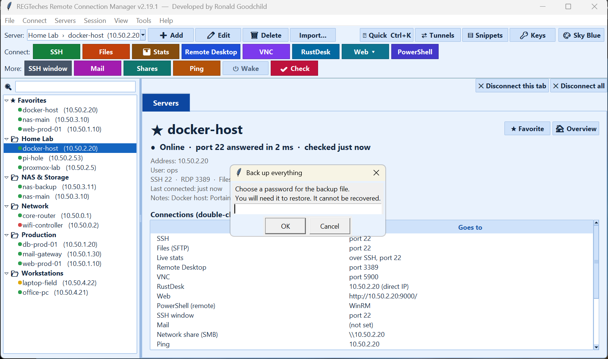
- Included: servers (with extra connections, tunnels, bookmarks and saved passwords), snippets, workspaces, identities, proxies, notes and trusted host keys. Passwords are re-encrypted for the new PC and account on restore.
- Not included: SSH key files (copy your
~\.sshfolder yourself; RC tells you how many servers use one), command history and settings. - A safety copy of your server list is saved first (
hosts.json.before-restore-<time>).
RC.exe, so copying the whole folder to a USB stick also works for everything except saved passwords.Sync through a folder
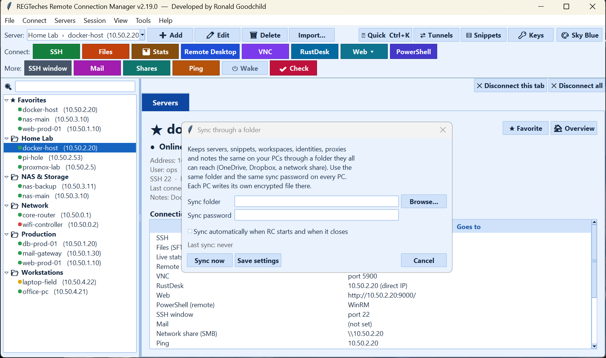
File > Backup > Sync through a folder keeps servers, snippets, workspaces, identities, proxies, notes and trusted host keys the same on several PCs. Use the same folder (OneDrive, Dropbox, a network share) and the same sync password on each. Each PC writes its own encrypted file, the newest change wins, and deletions carry across. SSH key files and command history are not synced.
Themes, preferences and shortcuts
Colour themes
Seven themes: Sky Blue (default), Sunset, Mint Fresh, Royal Dark, Neon Purple, Classic Dark and Classic Light. Click the 🎨 button at the top right to cycle, or pick one under View > Color theme. The choice is remembered. The terminal keeps its own colours in every theme.
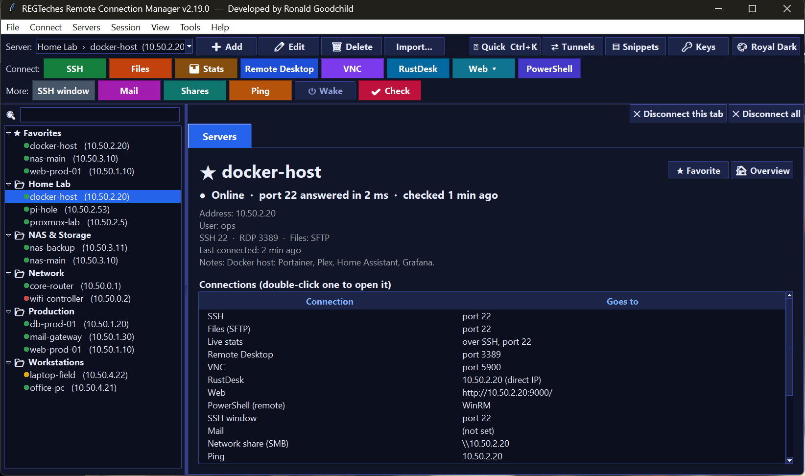
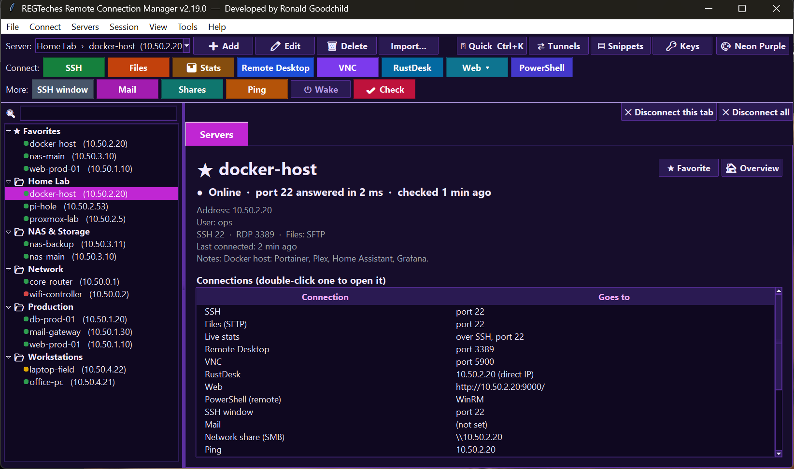
Preferences
Tools > Preferences (saved in prefs.json, applied at once):
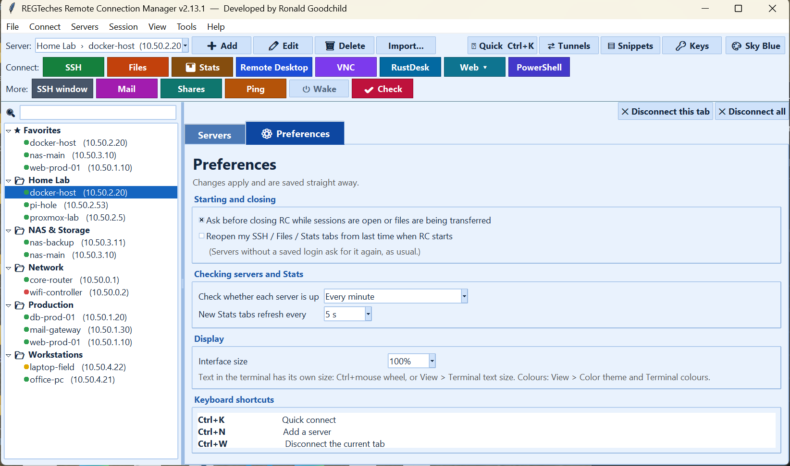
- Ask before closing RC while sessions are open or files are transferring (on by default).
- Reopen my SSH / Files / Stats tabs from last time when RC starts (off by default).
- How often the server list checks whether each server is up (off, 30 s, 1 / 5 / 15 min).
- The refresh interval for new Stats tabs.
- Interface size, 80% to 200%.
Keyboard shortcuts
| Keys | What it does |
|---|---|
| Ctrl+K | Quick connect |
| Ctrl+N | Add a server |
| Ctrl+W | Disconnect (close) this tab. Middle-click a tab does the same. |
| Ctrl+1 … 9 | Go to tab 1 … 9 (9 = the last tab) |
| Ctrl+Tab / Ctrl+Shift+Tab | Next / previous tab |
| Ctrl+Shift+D | Duplicate the terminal session |
| Ctrl + mouse wheel (terminal) | Text size |
| Ctrl+Shift+C / Ctrl+V | Copy / paste in a terminal (also Shift+Insert) |
| F5 F6 F7 F8 F2 F4 (file manager) | Copy, move, new folder, delete, rename, edit |
| Ctrl+A / C / X / V (file manager) | Select all, copy, cut, paste here |
These shortcuts work while you type in a terminal and are not sent to the server.
Menu reference
Every item in the menu bar, left to right.
Right-click menus
- A server in the list: its default action first, then Edit, Duplicate, Favourite, Notes…, and a More submenu with the less-used connections (ping, wake, mail, shares…).
- A tab: Duplicate, Rename, Lock, Close, Close others / to the right / to the left.
- A terminal: Copy, Paste, Colours, Font, Scrollback, Copy on select, Zmodem, Clear screen (keep scrollback), Save output to a file…
- A file: see File manager.
Where RC keeps things
All data lives in the folder that holds RC.exe (or the Scoop persist folder, or the folder named by the RC_DATA_DIR environment variable). Back these up to keep your setup; never publish them.
| File or folder | Holds |
|---|---|
hosts.json | Your servers, with saved passwords encrypted for your Windows account |
known_hosts | Trusted SSH host keys |
settings.json, terminal.json, prefs.json | Theme, terminal look, preferences |
snippets.json, history.json, notes.json | Saved commands, command history, notes |
identities.json, proxies.json, workspaces.json | Shared logins, proxies, split-view layouts |
recordings\, logs\ | Terminal recordings and session logs |
rc.log | What RC did and any problems (never passwords). Rotated at 512 KB. |
A damaged hosts.json is never overwritten: RC moves it aside as hosts.json.corrupt-<time> and starts empty, so a typo cannot wipe your list. Bad values (like a port that is not 1-65535) are repaired and noted in the log.
Help & FAQ
A server shows a red dot but I know it is on.
RC tries the SSH port, the Remote Desktop port, then a ping. A machine with a firewall that blocks all three, or one only reachable through a proxy or jump server, may look down. Give it a proxy or jump server on the Network page, add its other addresses, or click ✔ Check this server to see exactly what answered. Refused means nothing is listening (fine if you do not use that service); no answer means a firewall dropped it or the machine is off.
"Host key changed" and the connection is refused.
The server was rebuilt or something is intercepting the connection. If you know it was rebuilt, open Tools > Credentials > Trusted host keys, select the server and click Forget. The next connection asks you to trust the new key.
My saved passwords vanished after moving to a new PC.
They are locked to the old Windows account. Use Backup and Restore to carry them over, or enter each password once (or set up keys).
RC reconnects forever / not at all.
A dropped connection retries on a schedule (2, 4, 8, 15, 30, 30, 60, 60 seconds). A clean exit, or a refused login, never retries, so a wrong password cannot lock an account. Press ⟳ Reconnect to try at once.
Remote PowerShell says the server is not trusted.
For a machine outside your domain add it to TrustedHosts, as Administrator: Set-Item WSMan:\localhost\Client\TrustedHosts -Value <address>.
VNC or RustDesk says it cannot find the program.
Install the viewer, or tell RC where it is by adding vnc_viewer or rustdesk_path to settings.json.
Where is the log?
Tools > 📄 Open the log file. It is rc.log next to hosts.json. Set the environment variable RC_LOG_LEVEL=DEBUG before starting RC for more detail. Send the log along when asking for help. It never contains passwords.
Limits
- The terminal does not send mouse events to programs and does not show sixel / image output. Wide (CJK / emoji) characters line up approximately.
- Without a saved login, Remote Desktop asks for the password in the normal Windows window.
- Windows only.
Security notes
- Plain FTP and Telnet send passwords unencrypted. Use SFTP / FTPS / SSH wherever the server offers them.
- FTPS ignores certificate errors, because home servers usually use self-signed certificates.
- Recordings and logs may contain sensitive text; treat them like passwords.
- Keep
hosts.json,known_hosts,identities.json,proxies.json,notes.json,rc.logand your backups private.
Download and licence
RC is free and open source under the MIT licence. Copyright © 2026 Ronald Goodchild (REGTeches), Jacksonville, Florida.
| Option | Command or link |
|---|---|
Zip with RC.exe | GitHub Releases |
| Scoop | scoop bucket add regteches https://github.com/ronaldgoodchild/scoop-regteches then scoop install rc |
| Source | pip install -r requirements.txt then python rc_manager.py |
Requirements for the source version: Python 3.11+, paramiko (SSH), pyte (terminal), pyserial (Serial), cryptography.